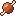
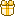
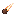

후원 보상
아래 개수와 정확히 같은 개수로 후원하면 게임에 바로 적용됩니다. 표에 없는 개수는 보상이 없습니다.
| 별풍선 | 보상 | 설명 |
|---|---|---|
| 20개 |  뼈고기 1개 | 먹으면 체력 +20, 기력 +40 |
| 33개 |  몬스터 소환 1마리 몬스터 소환 1마리 | 후원받은 스트리머 주변에 몬스터가 나타납니다 |
| 50개 |  일반상자 1개 일반상자 1개 | 랜덤 아이템이 들어 있는 상자 |
| 100개 |  고급상자 1개 | 더 좋은 아이템이 들어 있는 상자 |
| 200개 | 뼈고기 10개 | 먹으면 체력 +20, 기력 +40 |
| 300개 |  시세 변동 시세 변동 | 3일간 상점 가격이 아이템마다 -50% ~ +50% |
| 330개 | 몬스터 소환 10마리 | 후원받은 스트리머 주변에 몬스터가 나타납니다 |
| 500개 | 일반상자 11개 | 랜덤 아이템이 들어 있는 상자 |
| 1,000개 | 고급상자 11개 | 더 좋은 아이템이 들어 있는 상자 |
| 2,222개 |  세금 징수 세금 징수 | 공용 자금의 10~50%를 징수합니다 |
| 3,333개 |  메테오 1개 | 농장 작물 5×5칸을 경작 전 땅으로 되돌립니다 |
보상은 스트리머가 게임에 접속해 있고 /숲로그인으로 연결된 상태에서만 들어옵니다. 상자와 뼈고기는 /우편함으로 받습니다.
보상 설명
일반상자 · 고급상자
우편함으로 들어옵니다. 손에 들고 오른쪽 클릭하면 아래 확률표에 따라 아이템 하나가 나옵니다.
몬스터 소환
후원받은 스트리머 주변(3칸 안쪽)에 몬스터가 나타납니다. 여러 마리면 한 마리씩 따로 뽑습니다. 희귀 몬스터가 나오면 서버 전체에 알림이 나옵니다.
세금 징수
공용 자금에서 10~50% 사이의 비율이 무작위로 정해져 빠집니다. 서버 전체에 영향을 줍니다.
시세 변동
상점에서 파는 아이템의 가격이 아이템마다 다르게 오르거나 내립니다 (-50% ~ +50%). 3일(게임 날짜) 동안 유지되고, 그 사이에 새 시세 변동이 오면 새것으로 바뀝니다.
메테오
땅이 흔들리면서 농장의 작물이 있는 곳에 메테오가 떨어집니다 (보상 1번에 1개). 떨어진 자리 5×5칸의 경작지는 작물·비료와 함께 경작하기 전 땅으로 돌아갑니다. 스프링클러·허수아비·울타리·상자 같은 설치물과 나무, 거대 작물은 그대로 남고, 플레이어는 다치지 않습니다.
뼈고기
우편함으로 들어옵니다. 먹으면 체력 +20, 기력 +40 회복합니다.
확률표
일반상자에서 나오는 아이템
| 아이템 | 개수 | 확률 |
|---|---|---|
| 나무 | 15 | 20% |
| 돌 | 15 | 20% |
| 섬유 | 10 | 10% |
| 석탄 | 3 | 10% |
| 구리 광석 | 5 | 10% |
| 철 광석 | 3 | 7% |
| 수액 | 10 | 6% |
| 커피 | 1 | 5% |
| 기본 비료 | 5 | 5% |
| 정동석 | 1 | 4% |
| 금 광석 | 2 | 2% |
| 💰 500골드 | - | 1% |
고급상자에서 나오는 아이템
| 아이템 | 개수 | 확률 |
|---|---|---|
| 철 주괴 | 3 | 18% |
| 단단한 나무 | 5 | 15% |
| 고급 비료 | 5 | 12% |
| 스피드-그로 | 5 | 12% |
| 얼어붙은 정동석 | 2 | 10% |
| 금 주괴 | 2 | 10% |
| 마그마 정동석 | 2 | 8% |
| 고급 스프링클러 | 1 | 6% |
| 오색 정동석 | 1 | 4% |
| 이리듐 광석 | 3 | 3% |
| 다이아몬드 | 1 | 1.5% |
| 프리즘 조각 | 1 | 0.5% |
소환되는 몬스터
| 몬스터 | 확률 |
|---|---|
| 초록 슬라임 | 29.2% |
| 파란 슬라임 | 13.6% |
| 박쥐 | 12.5% |
| 벌레 | 10.4% |
| 애벌레 | 10.4% |
| 빨간 슬라임 | 5.2% |
| 서리 박쥐 | 5.2% |
| 먼지 정령 | 5.2% |
| 바위 게 | 4.2% |
| 용암 박쥐희귀 | 1% |
| 유령희귀 | 0.8% |
| 해골희귀 | 0.8% |
| 그림자 무사희귀 | 0.8% |
| 그림자 주술사초희귀 | 0.3% |
| 미라초희귀 | 0.1% |
| 날개 달린 뱀초희귀 | 0.3% |
확률과 보상은 운영 중에 바뀔 수 있습니다. 이 페이지는 서버 설정에서 자동으로 만들어집니다.